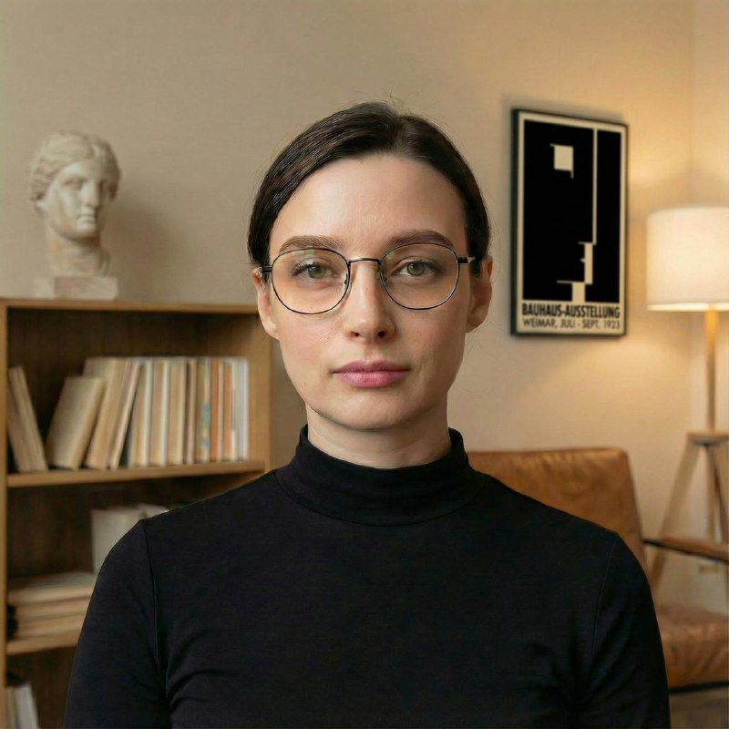

Ребёнок редко может рассказать, что с ним происходит. Зато он показывает это в игре, в рисунке, в симптоме. Моя работа: понять, о чём он говорит.
Родители обычно приходят с вопросом, на который у них уже нет ответа.
Детский психоанализ подходит не только для тяжёлых случаев. Часто поводом становится то, что ребёнок изменился, и взрослые больше не понимают почему.
Первая встреча проходит с родителями, без ребёнка.
Без ребёнка. Вы рассказываете, что вас тревожит, как он рос, что происходит в семье.
Он играет, рисует, разговаривает. Я наблюдаю, что и как он мне показывает.
Я делюсь своим пониманием и говорю, нужна ли регулярная работа и какой она может быть.
В одно и то же время, в одном и том же месте. Встречи с родителями продолжаются.
Постоянство рамки здесь часть лечения.
Одно время и одно место. У каждого ребёнка свой ящик с игрушками, и он хранится только для него.
ПСИХОАНАЛИЗ